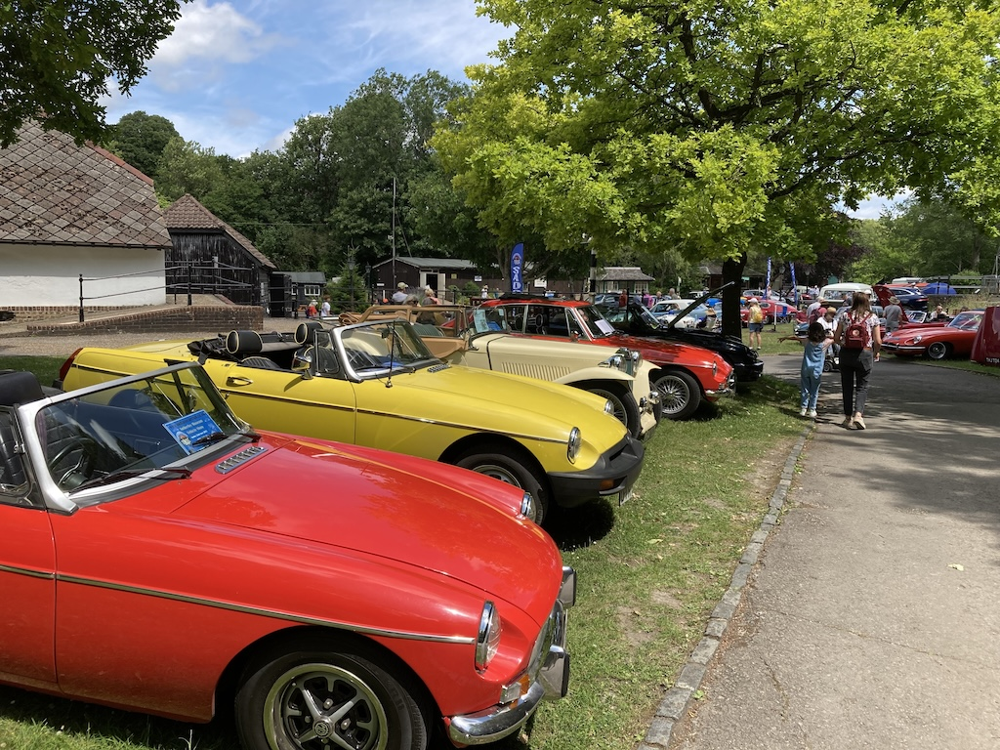
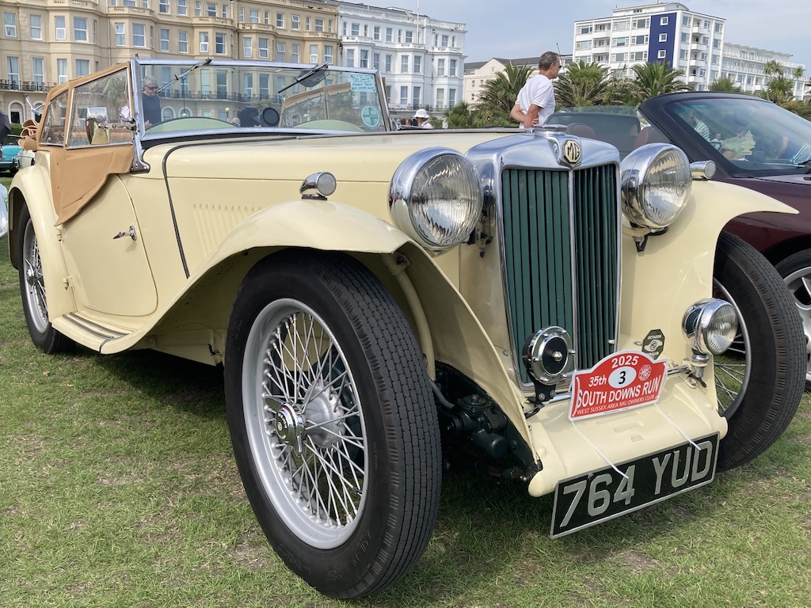
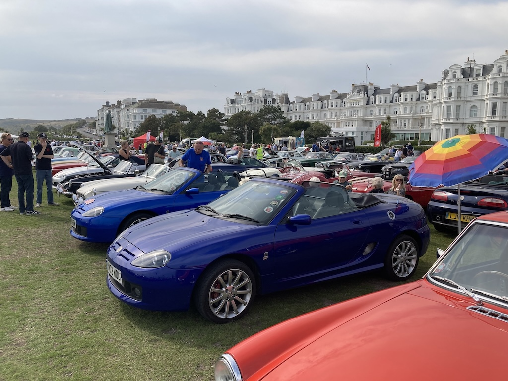

Sussex Wanderers, West Dean to West Dean - 9th April
 Last summer, not only were we away for some of the time, but TC4985 was at Milestone Classics at Wisborough Green so that they could try to find a buyer. They didn't! But it meant that I missed a number of runs, including the South Downs Run (although I marshalled and Angela helped in the cafe). In the spring of this year I discovered that two of the brake slave cylinders were leaking, so decided to replace them all, along with the flexible hoses. So this was the first real outing of the year.
Last summer, not only were we away for some of the time, but TC4985 was at Milestone Classics at Wisborough Green so that they could try to find a buyer. They didn't! But it meant that I missed a number of runs, including the South Downs Run (although I marshalled and Angela helped in the cafe). In the spring of this year I discovered that two of the brake slave cylinders were leaking, so decided to replace them all, along with the flexible hoses. So this was the first real outing of the year.
It was a fine, sunny day, albeit a little chilly, and I started by driving to Lyminster, via Long Furlong, to pick up David F-B, who was going to navigate. Due to a long queue at Crossbush we took a more scenic route to West Dean, where we met up with the rest of the Wanderers. So far that was 38 miles. After coffee and a chat we went off on the circular route shown here, another 32.5 miles, before lunch.
David needed to go to Petworth to pick up his TR4A from a garage, so I dropped him there and then drove home via Pulborough and Storrington. In total the TC did 105 miles and ran very well.
Sussex Wanderers, Warnham and back to Warnham - 14th May
 Another quite long run on a beautiful day. I had no navigator so I set off in the TC for Warnham, just to the west of Horsham. I discovered that Peter and Margaret's TC was overheating, so they had decided not to take it on the run, but, after lunch, to nurse it back to Godalming. Consequently they split up and over coffee we agreed that Margaret would navigated for me. There was a good selection of MGs in the Royal Oak car park. You can just about see my TC parked up at the back.
Another quite long run on a beautiful day. I had no navigator so I set off in the TC for Warnham, just to the west of Horsham. I discovered that Peter and Margaret's TC was overheating, so they had decided not to take it on the run, but, after lunch, to nurse it back to Godalming. Consequently they split up and over coffee we agreed that Margaret would navigated for me. There was a good selection of MGs in the Royal Oak car park. You can just about see my TC parked up at the back.
Unfortunately, after missing a turn and so losing a steam of MGs, we came across a road closure, which I was assured hadn't been there the day before. So we headed north to the A25, into Dorking and back down the A24 to Warnham. This, it turned out, was not the best route and not only did we miss the last part of the route but it added 15 miles to the journey. Overall I drove the TC 80 miles and it ran well, although when I went to start the car at Warnham, the slow running adjustment wouldn't work.
SADCASE Amberley Meet - 22nd June
The WSMGOC had a club area at the SADCASE event at Amberley Museum. It wasn't an ideal location for people to see my 'for sale' sign, but at least one person took a note of my phone number. It wasn't as hot as previous days, but there were sunny periods and the rain held off. There is always plenty to see at the museum and so I went into most of the exhibit buildings. Otherwise I sat chatting to other club members. I was home by 4:15.
Sussex Wanderers, Fontwell to Northchapel - 9th July
My Sussex Wanderers day started with a phone call from David F-B to say that he was unwell. So I would be going on the run without a navigator and so left for Denmans Gardens at Fontwell. After coffee I followed someone in an MGB around the route, with some very bumpy roads towards the end. By the time that I got home, at about 2:30, I had done a total of 68 miles.
It was very hot and shortly before getting home the engine started to stutter. I think this is due to fuel vaporisation. Certainly the fuel pipe to the front Carburettor is directly above the exhaust manifold.
South Downs Run 2025 - 7th September
It was a clear, sunny, if slightly chilly morning for the start of the 35th South Downs Run. I was at the Southdowns Gliding Club field by eight o'clock to help marshall the arriving cars (mostly MGs) and I left at about 10:30 to do the run. Actually I skipped the first loop around West Chiltington, Ashington and Wiston and picked up the route on the A283 at the Wiston turn. Since I had no navigator I was using an app on my phone into which I had imported a GPX file for the complete route. Unfortunately the sound stopped when I deviated from the route and did not start again. However, I followed some other MGs until we got to Alfriston, where they missed a turn. I stopped, checked the route, turned around and found the turn. From there I had to look at the phone to see upcoming turns.
After a wonderful ride past Birling Gap and Beachy Head, I arrived at the Western Lawns in Easbourne at a quarter to one, after a non-stop journey and parked up with the other MGs. After some lunch I walked around the cars and chatted to many people. By the end of the day there were nearly 200 MGs there.
My journey home was more direct, following the A259 along the coast, although it was slow through Newhaven and Brighton. In total I drove the TC 107 miles.